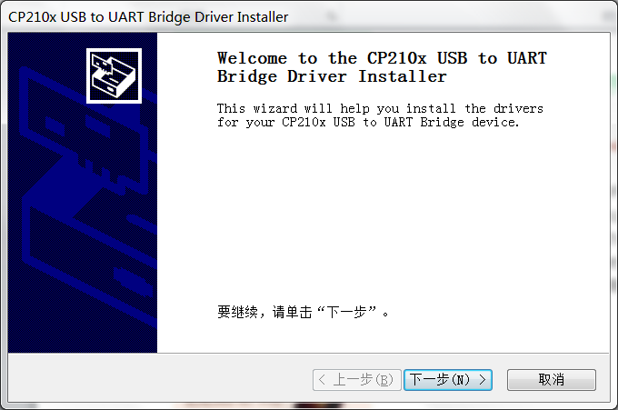
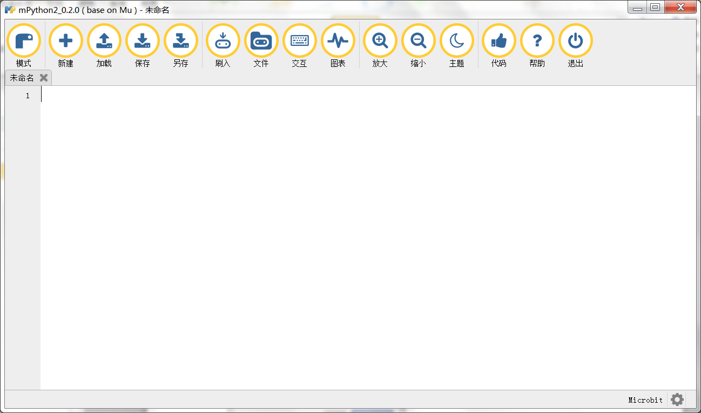
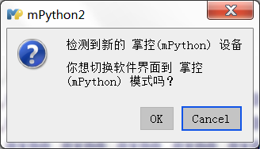
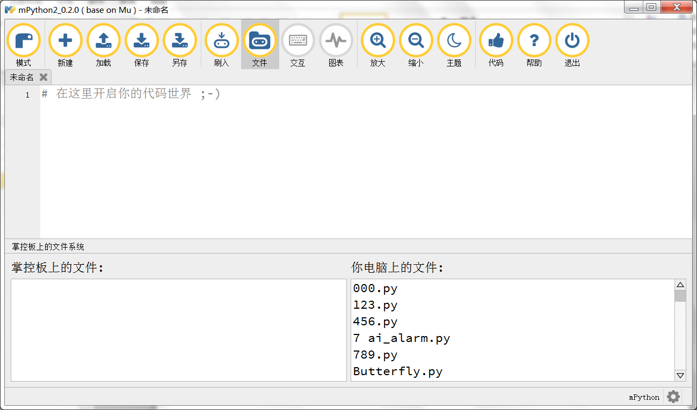
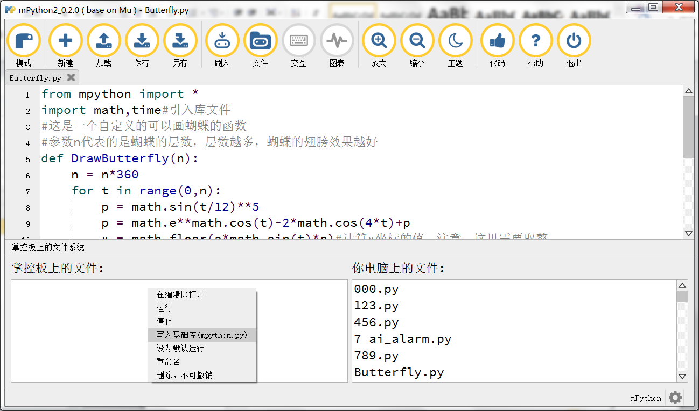
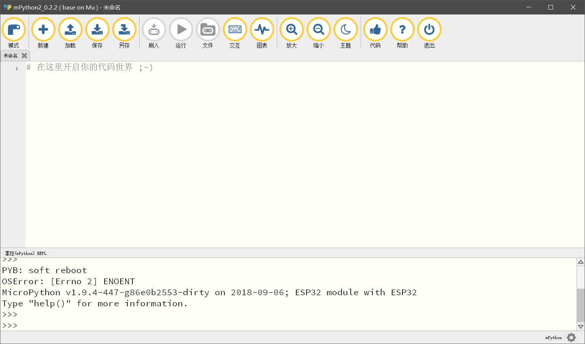
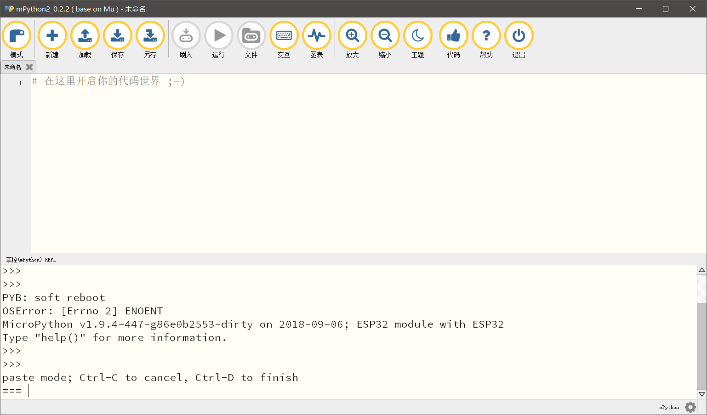
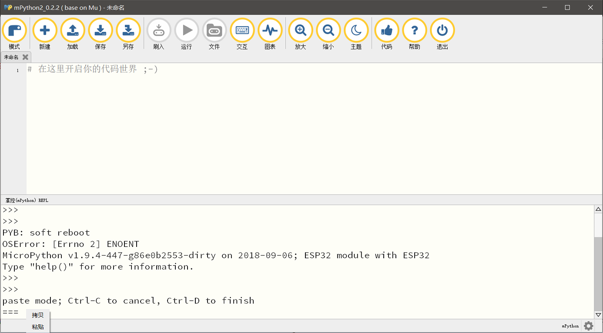
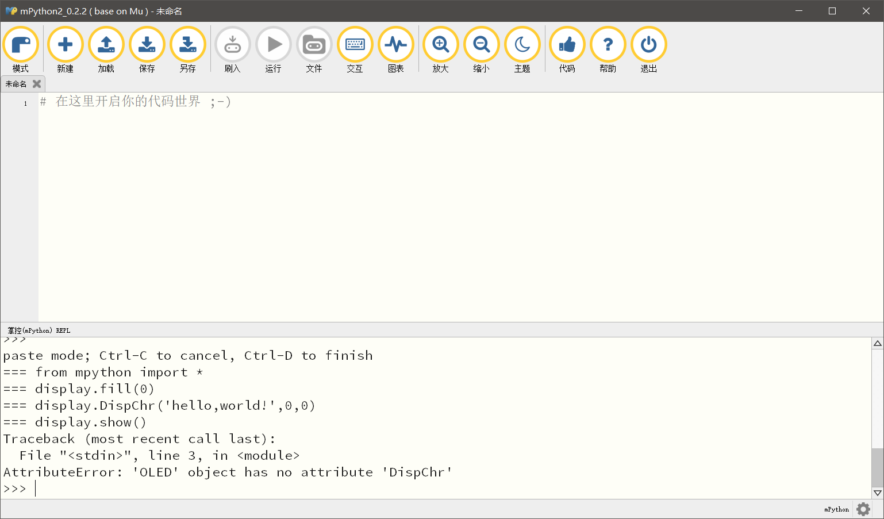

mPython2 IDE¶
软件安装¶
目前有三个下载地址（for Windows 64位、Windows 32位、MacOS）：
http://static.steamaker.cn/files/mPython2_0.2.5_win64.exe
http://static.steamaker.cn/files/mPython2_0.2.5_win32.exe
http://static.steamaker.cn/files/mPython2_0.2.5_macos.zip
根据操作系统选择不同的版本下载，目前支持Win 7 / 8 / 10、MacOS，不支持XP系统。
注意
因为Python调用路径的原因，程序不可以安装在中文目录下。 程序默认会安装在Windows用户目录下，如：C:\Users\{用户名}\AppData\Local\mPython2 有的用户名为中文，使用默认路径会导致安装后的快捷方式无法正确打开 请修改路径，如下图，修改为：D:\mPython2
提示
安装过程有可能被杀毒软件误报病毒，需要选择“允许程序所有操作”。
安装软件的最后一步，会自动安装CP210x的驱动，如果先前安装过则可以忽略。
接入硬件¶
点击桌面快捷方式mPython2，打开软件主界面。
用USB线接入掌控板。如果是初次接入，Windows可能要花费比较多的时间才能识别出掌控板，正确识别后， 软件会自动弹出提示，提示切换到：掌控（mPython）模式，如下图：
上述顺序可以颠倒，即：可以先接入掌控，再打开软件，一样会弹出提示。 如果软件已经是掌控模式，再接入掌控时，则只会在状态栏上提示。
浏览文件系统¶
点击菜单“文件”，打开掌控板上文件系统，目前为了确保掌控板文件系统能被正确打开，这个过程约需要3秒。
掌控板文件系统¶
界面左下是掌控板文件系统，初次使用掌控板，文件列表可能是空白的。 界面右下是本地文件系统，对应目录在 C:\Users\{用户名}\mu_code
写入基础库¶
掌控板文件区菜单自带基础库mpython.py，初次使用需要先把基础库写入掌控板。 如图，在掌控板文件区任意地方，鼠标右键点击“写入基础库(mpython.py)”
注解
写入基础库的目的是：以后在程序中可以使用 from mpython import * 的语句
本地文件系统¶
界面右下是本地文件系统，对应目录在 C:\Users\{用户名}\mu_code
在交互模式下进行调试¶

{kind=link}
{kind=link}
停止默认运行程序¶
进入交互模式后，掌控板会软重启，默认会运行main.py，此时，先点击REPL区，并按下Ctrl+C，来打断main.py的运行。
准备粘贴代码¶
鼠标焦点在REPL区的时候，按下Ctrl+E，进入代码粘贴模式。
粘贴代码¶
用鼠标右键粘贴已有的代码，代码中若含有中文，将自动转换为Unicode格式。
退出粘贴模式，并调试代码¶
按下Ctrl+D，退出粘贴模式，同时运行代码，此时可以同时查看调试信息。
